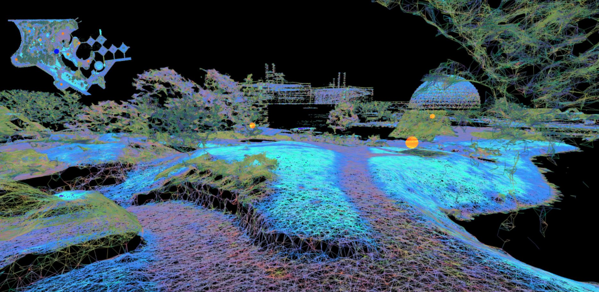

A poetic, site-specific interactive experience exploring memory, loss, and transformation at Ontario Place.
Understanding What We Can Only Feel invites participants to wander through a virtual 3D point-cloud reconstruction of Ontario Place before its redevelopment. Projected back onto the site itself, the work blurs boundaries between past and present, physical and digital, inviting slow, reflective engagement with a disappearing public space.

Concept & Inspiration
This piece responds to the ongoing privatization and redevelopment of Ontario Place, once a cherished public space. Drawing on the theory of hauntology and the idea of lost futures, the work considers what it means to inhabit a place that no longer exists as it once did. The projection site becomes both memorial and speculative space, a way of holding onto what is being erased.
Interaction & Experience
Participants use a simple controller to navigate the point-cloud environment. Movement is intentionally slow and deliberate, encouraging attention to detail, spatial relationships, and the layered absence of the site. Ambient audio and subtle visual distortions create a sensory atmosphere that shifts with the participant’s pace, inviting them to linger in the space rather than rush through it.

Technical Approach
The environment is built from a 3D point-cloud model created through photogrammetry and rendered in TouchDesigner, functioning as a custom game engine. Projected using NODE-1 for site-specific display, the work exists simultaneously as digital artifact and public intervention. The use of real spatial data anchors the work in physical reality, while the fragmented, shimmering quality of the point cloud keeps it in the realm of memory and possibility.
Themes
The piece engages with several interconnected themes. Hauntology speaks to the persistence of lost futures in the present. Memory and place intersect in the attempt to hold onto public spaces through shared imagination. Urban change becomes a palpable presence, as participants witness and reflect on the politics of redevelopment unfolding around them.
Future Directions
This work is part of a broader investigation into site-specific tactical media and could be adapted for other contested or disappearing spaces. Future iterations may incorporate expanded sound design with archival audio, multi-user navigation for shared exploration, and archival layering to compare past, present, and projected futures.